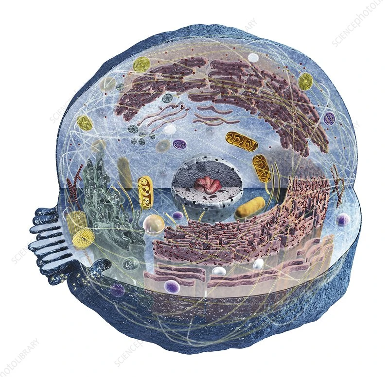

Follow SDHA (succinate dehydrogenase subunit A) — a core TCA cycle enzyme and
Complex II of the electron transport chain — from its location on chromosome 5p15 to the nucleotide sequence.
SDHA is intracellular, residing in the inner mitochondrial membrane.
Human Genome · hg38
SDHA Exon 1 region — scroll to zoom · drag to pan
🔬Thread to Level 2: SDHA (gene on chr5p15) encodes the catalytic subunit of
succinate dehydrogenase — the enzyme that converts succinate to fumarate in step 6 of the TCA cycle.
It is the only TCA enzyme that is also embedded in the inner mitochondrial membrane (as Complex II).
Level 2
SDHA in the TCA Cycle (Krebs Cycle)
The TCA cycle in the mitochondrial matrix.
SDHA ✦ is the hero enzyme (amber).
Every arc uses the same 3-layer width: faint halo (2×) · thick line (best estimate, blood PSM) · thin line (lower bound — actual expression may be lower).
Particle speed encodes the flux hypothesis — drag the slider to explore.
⚠️ Arc width = expression range (blood PSM proxy). Particle speed = flux hypothesis. Neither is measured reaction flux.
Flux coupling kEqual (0)∝ Protein (1)
⚠ Real flux requires ¹³C-MFA or FBA — not derivable from proteomics alone.
Metabolite
Enzyme arc — 3-layer uniform width
SDHA ✦ (hero) — amber, also ETC Complex II
NADH output
Acetyl-CoA input
Particle speed = flux hypothesis (slider)
🔬Thread to Level 3: The TCA cycle is one of many pathways sharing the
mitochondrial matrix. SDHA also anchors to the inner membrane as Complex II.
The next level zooms into the mitochondrion itself and places each pathway in its correct spatial zone.
Level 3
All Pathways Inside the Mitochondrion
MitoCarta 3.0 pathways detected in two whole-blood cell types (Tabula Sapiens, n=85,233 cells).
Each rectangle = one MitoCarta pathway — area ∝ mean RNA count across pathway genes in that cell type.
OXPHOS (amber) contains SDHA ✦ (Complex II). Hover for details.
Neutrophil
Classical Monocyte
TCA Cycle — contains SDHA ✦ (hero)
Other mitochondrial pathways
Rectangle area ∝ total PSM counts across pathway genes (PeptideAtlas blood)
🔬Thread to Level 4: The mitochondrion is a distinct organelle in the cytoplasm.
In actively respiring cells it can occupy ~15–25% of cell volume.
The next level places it in the context of all other cellular compartments.
Level 3½
Mitochondrial Processes — Reactome Categories
All MitoCarta 3.0 genes grouped into biologically coherent Reactome pathway categories.
Area ∝ total mean RNA counts across category genes (Tabula Sapiens blood). Same two cell types as Level 3.
Aerobic respiration & ETC (amber) contains SDHA ✦.
Neutrophil
Classical Monocyte
Aerobic respiration & ETC — contains SDHA ✦
Other Reactome categories
Area ∝ total RNA counts · MitoCarta 3.0 × Reactome × Tabula Sapiens
🔬Thread to Level 4: These ~15 Reactome categories summarise all mitochondrial function.
The next level zooms into each individual MitoCarta pathway (107 tiles at leaf resolution).
Level 4
The Mitochondrion in the Cell
GO Cellular Component compartments — area ∝ mean RNA counts across compartment genes in classical monocyte (Tabula Sapiens).
Mitochondrion (amber) harbours SDHA ✦. Hover for details.

Classical Monocyte — GO Cellular Components
Mitochondrion — SDHA ✦ (hero)
Other cellular compartments
Rectangle area ∝ mean RNA counts per GO CC term (Tabula Sapiens, classical monocyte)
🔬Thread to Level 5: Mitochondrial abundance varies dramatically by cell type.
Mature erythrocytes (red blood cells) contain no mitochondria — they rely entirely on glycolysis.
Monocytes, NK cells, and hepatocytes have high oxidative phosphorylation activity.
Level 5
Mitochondrial Activity Across Cell Types
Schematic UMAP coloured by mitochondrial enrichment score
(amber = high OXPHOS activity; blue = low; grey = no mitochondria).
Bubble size = total mitochondria-annotated genes detected. Hover for breakdown.
⚠️ Schematic UMAP — positions and scores estimated from published cell-type biology.